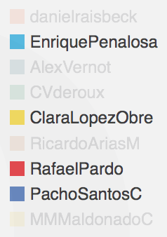

<div ng-controller="cloudtagController" ng-init="init()">
  <div class="row">
    <div class="col-md-9 pull-left cloud-tag">
      <div ng-class="{ 'full-message-box': boxIsFull, 'min-message-box': !boxIsFull }">
        <p class="white-text text-md2 padding-top-lg col-md-12" ng-show="boxIsFull">
          El CloudTag presenta las palabras más repetidas o comunes en los tweets de cada uno de los candidatos. Los colores de las palabras representan el partido de los candidatos.
        </p>
        <div class="hide-box">
          <button class="btn btn-link fa white-text text-md no-change-link" ng-class="{ 'fa-chevron-up': boxIsFull, 'fa-chevron-down': !boxIsFull }" ng-click="changeMessageBoxState()"> {{ showOrHide }}</button>
        </div>
      </div>
      <br>
      <br>
      <span ng-repeat="word in words" ng-style="{'color': word.color}" class="tangcloud-item-{{ word.size }}">
        {{ word.word }}</span>
      </div>
      <div class="col-md-3 pull-right">
        <div class="chart-options">
          <button type="button" class="btn btn-outline squared-box" ng-click="showAllCandidates()">Todos</button>
          <button type="button" class="btn btn-outline squared-box" ng-click="showPopularCandidatesOnly()">Populares</button>
        </div>
        <div class="cloud-tag-info">
          Aqui va la leyenda pero no tengo SVG.
          
        </div>
      </div>
    </div>
  </div>